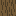

Navigation flow
How a player moves through the launcher. There is no URL router: the page on
stage is one state value, changed by two functions, go(screen) and
back(). Every button, card and sidebar item calls one of them, so
the whole map fits on one diagram.
 Screen map
Screen map
Blue boxes are the four sidebar sections, reachable from every page. Solid arrows are forward navigation, dashed gold arrows are Back with context restored, the dashed box holds the layer of dialogs that can open over any page.

Sidebar sectionsThe lit sidebar item answers "which section am I in", not only "which screen". The primary button at the top changes with the section.
| Screen | Lit item | Primary button | Back row |
|---|---|---|---|
| Setup (login) | none, no sidebar | none | no, a root |
| Instances (dashboard) | Instances | New Instance | no, a root |
| New instance / New server | Instances or Servers | hidden (you are there) | yes |
| Instance page | Instances | New Instance | yes |
| Servers, server page | Servers | New Server | server page only |
| Skins, skin editor | Skins | New skin | editor only |
| Addons, addon details, Ask AI | Addons | New Instance | details, locked Addons, Ask AI |
 Entry points
Entry points
| Page | Reached from | Notes |
|---|---|---|
| Setup | First start with no profile; Add profile in the profile dialog | Never stored in history: Back can never land on it. |
| Instances | Start (profile exists), sidebar, profile switch, end of an empty history | A root: clears history. |
| New instance | Sidebar New Instance, the New Instance tile, empty states, "Create instance" in the no-compatible-instance dialog | Import file lives here too. |
| New server | Sidebar New Server on Servers, empty state, a modpack's "New server from this modpack" | Same form, server mode. |
| Instance page | An instance card or row, Manage on Last played, after Create | Opens on the tab used last for that instance. |
| Server page | A server card, after Create | Opens on the tab used last for that server. |
| Addons | Sidebar; an instance's Add resources; a server's Mods tab | From an instance or server it is locked to it. |
| Addon details | A result card, an AI pick's Details, an installed card in a Mods, Resource packs or Shaders tab | Carries the instance lock. |
| Ask AI | Ask AI on the Addons header; Ask AI on an instance's file tab | From an instance it knows its version and loader. |
| Skin editor | Sidebar New skin on Skins; Edit on a skin card | Keyed by skin; offers a saved draft. |
Back and history
Rules
- Each step stores the page and its scroll position.
- At most 20 steps are kept; older ones drop off.
- Instances and Setup are roots: going there clears history.
- Going to the page you are already on does nothing.
- Back with an empty history goes to Instances.
- A new page starts at the top; a page reached with Back restores its scroll.
What Back restores
- Addons: search text, type, version, loader, sort, topics, page, the results and the AI panel.
- Instance and server pages: the open tab.
- Every page: the scroll position.
- The label names the destination: "Back to Modded Fun", "Back to Addons".
- Profile switch always lands on Instances, since the page you were on may belong to the other profile.
 Two ways into Addons
Two ways into Addons
Same page, different rules. Installing never takes more than two clicks.
| From the sidebar | From an instance or server | |
|---|---|---|
| Version and loader filters | Free | Locked to the instance, shown disabled with their value |
| Project types offered | All five | Vanilla instance: resource packs and datapacks · modded instance: all five · modded server: mods and datapacks · vanilla server: datapacks |
| Add does | Opens a picker of compatible instances (1 more click) | Installs straight away |
| Installed results | Not marked | Read Added |
| No instance fits | A dialog offers Create instance | Not possible: results are pre-filtered |
 Dialogs and overlays
Dialogs and overlays
Not pages: they float over whichever page is on stage, never change history, and close with Escape.
Activity popover
From the sidebar. Jobs with progress and Cancel, open games, running servers.Profile switcher
From the profile button. Switch, add (opens Setup) or remove a profile.Account menu
Theme, language, Privacy and terms.Add to instance
The compatible-instance picker from sidebar Addons; the world picker for datapacks.Confirmations
Delete instance, world, server, backup or skin; Close game; stop a server to change settings; a third server.System
Update available, game crashed (Open logs folder), servers running on close, conflict with See options. Task journeys
Task journeys
The shortest path for the tasks players do most. Counts are clicks from the page where the journey starts.
First game, from a fresh install · about 6 clicks
Back to the game · 1 click
Add a mod to an instance · 2 clicks after searching
Find mods without knowing names
Host a world for friends · 5 clicks
Join a friend's modded server
 Keyboard
Keyboard
| Key | Effect |
|---|---|
Tab / Shift+Tab | Moves through sidebar, page actions and cards; focus ring always visible. |
Enter / Space | Opens a focused card (each card is a real button) or presses a button. |
Esc | Closes the open dialog or popover. |
Enter in Setup | Moves to the next step when the nickname is valid. |
B E G I, Ctrl+Z, Ctrl+Y, 0 | Skin editor tools, undo, redo, reset view. |